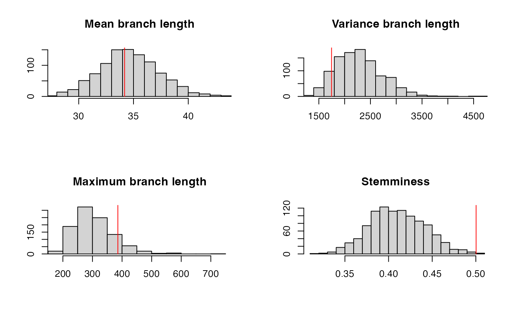

Loading the data
In this vignette we demonstrate the usage of DiagnoDating on a
dataset of Hepatitis B virus (HBV) published by Zoe Patterson Ross et al
(2018). The data for this example can be loaded using the command
data(HBV). This will load in your environment the object
phy which is the phylogeny constructed using PhyML. To
perform dating, we also need to know the dates of the samples. This is
stored in labels of the tips of the phylogeny, and can be extracted as
follows:
library(DiagnoDating,quietly=T)
set.seed(1)
data(HBV)
dates=as.numeric(gsub(".*_","",phy$tip.label))
names(dates)=phy$tip.labelDating analysis
Let us perform a dating analysis using BactDating and the additive relaxed clock model (ARC):
## Result from BactDating, model arc, clock rate 0.29, relaxation parameter 27.75, root date 1158.83Diagnostics of the dating analysis
The posterior predictive check is not satisfied:
ppcheck(r,showPlot = T,showProgress = F)
## [1] 0.008The residual analysis is also not satisfied:
ps=postdistpvals(r,showPlot = T)## The posterior distribution of p-values has median 0.00 and 99.70% of values below 5%